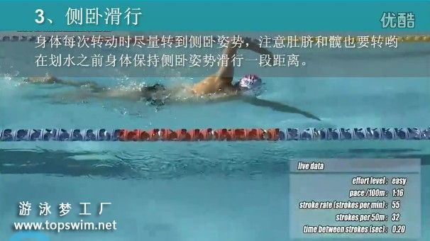
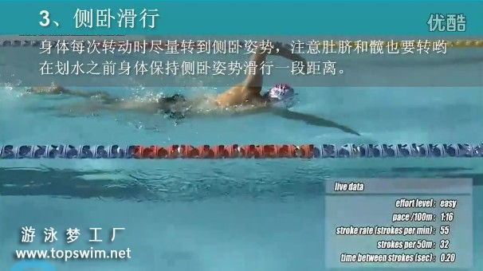
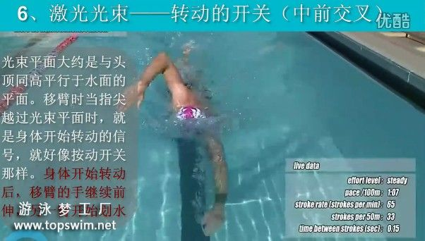
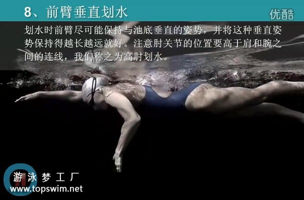
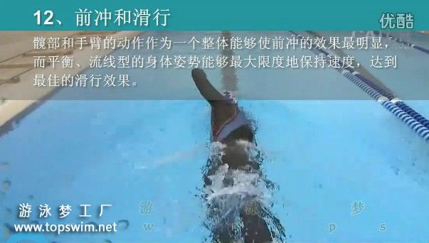
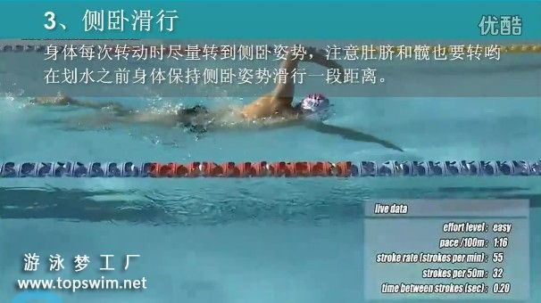
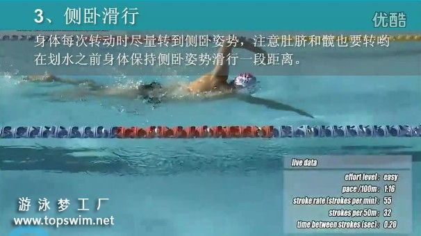
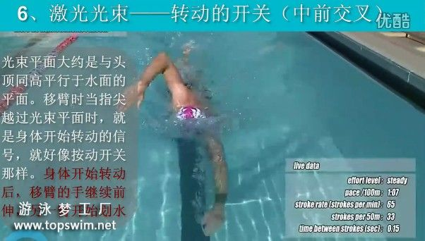
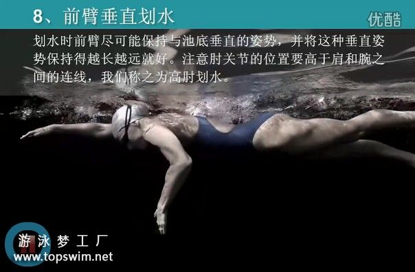
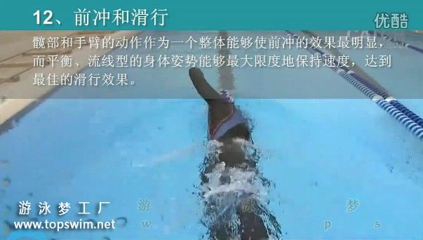

【视频】自由泳技巧----初学者不能不知道的技巧
我是四年前的夏天开始学习自由泳的，感觉论坛中的各位前辈大侠对我的帮助。
近期收集了一些高清视频，结合《健身游泳》中的自由泳14点技巧做了一个视频。
在这个视频里，有各路高手（smooth、speedo、全浸等）为您展示自由泳的14点必备技巧。其实，自由泳已经没有所谓的全浸和传统，因为大家都是在自由泳
视频截图如下：
 

 

近期收集了一些高清视频，结合《健身游泳》中的自由泳14点技巧做了一个视频。
在这个视频里，有各路高手（smooth、speedo、全浸等）为您展示自由泳的14点必备技巧。其实，自由泳已经没有所谓的全浸和传统，因为大家都是在自由泳
视频截图如下：
 


 
